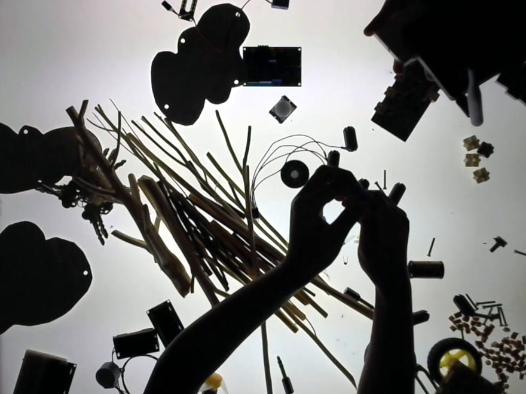

Everything happening at The City School this year, in one place.
A note from Trevor
After school activities open for sign up today.
Sign up opens at 10am on Monday 24 August and stays open for the next two weeks. Twenty-eight activities run from 7 September to 17 December: making and tech, studio arts, sport and movement, language and music. The ASA page has the brochure with every activity, what each one costs, and what happens after you register. Having trouble registering, or any questions? Email activities@elc.ac.th.

ASA
The hours after school, well spent. Sport, arts, design and tech, in short term blocks.
- 20–21 Aug Showcase on campus
- 24 Aug Sign-up opens 10am
- 7 Sep ASAs start
- 17 Dec Last day of ASAs
Workshops & coffee mornings
Parent workshops and coffee mornings: the occasions that bring ELC families together across the year.
See what's on →Extended hours
More flexible this year: K1 children stay on to 14:30, on 3, 4 or 5 days a week you choose, in English or in Mandarin.
- Open now Sign-up is open
- 19 Aug First day, with the school year
Policies & forms
Term dates, uniform, medical and conduct. Read it once, find it always.
Open policies → FAQQuick answers
Quick answers to the questions families ask most, each one with the person to contact.
Find your answer → Day to dayNuts and bolts
Where to park, when the day starts and ends, what to send, and who to call.
Read the detail →Kob khun means thank you. This is where we keep what families tell us, and where we celebrate our children and what they go on to do.